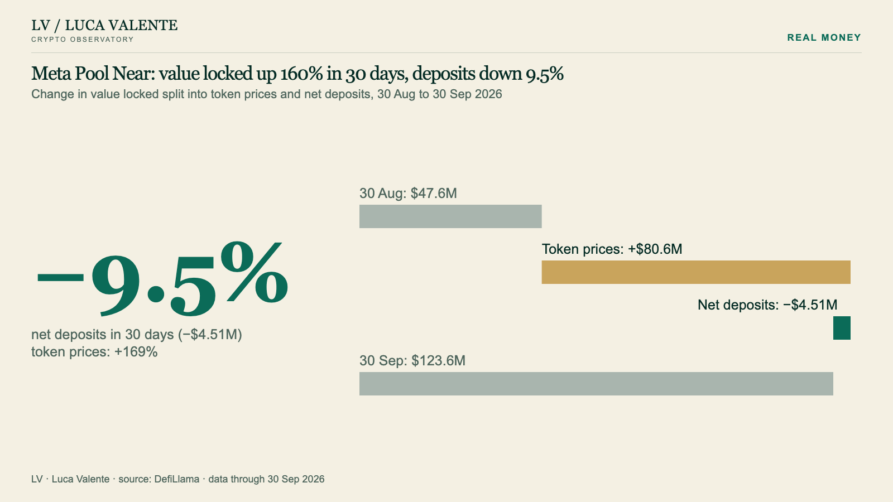

Code & data
What it is
- The methods behind the charts on this site are open source: small, documented Python functions under the MIT licence.
- The daily numbers they produce are published as CSV files, free to reuse with attribution (CC BY-NC 4.0).
- Everything describes what the data already shows. Nothing in it is a forecast or investment advice.
Eight plain questions about a protocol
- Is it moving differently from its peers?
peers - Can the number be trusted?
data_check - Did value locked grow because of prices or because of deposits?
decomposition - Where does it stand in its own sector, on five measures at once?
health_index - Are its fees earned every day, or on a few one-off days?
fee_quality - How much does it depend on one chain, or on a few days?
concentration - How much of the deposits in a lending market is lent out?
lending - What followed an event, compared with the rest of the sector?
event_study
How to use it
git clone https://github.com/lucavalente-research/defi-observatory.git
cd defi-observatory
python -m venv .venv && . .venv/bin/activate
pip install -e ".[test]"
pytest
python examples/quick_tour.pyPython 3.9 or later. No dependencies besides the standard library. The tests run on small made-up data and on real cases saved with the code.
from defi_observatory import decomposition
start = {"ETH": (10, 20_000.0), "USDC": (5_000, 5_000.0)} # token: (quantity, value in USD)
end = {"ETH": (12, 36_000.0), "USDC": (4_000, 4_000.0)}
out = decomposition.decompose(start, end)
out["price_effect_usd"], out["flow_effect_usd"] # (10000.0, 5000.0)A real case in the tests: Meta Pool Near, 30 days to 30 September 2026. Value locked +160%; token prices +169%; net deposits −9.5%.
A real example
30 Sep 2026
Meta Pool Near: value locked up 160% in 30 days, deposits down 9.5%
